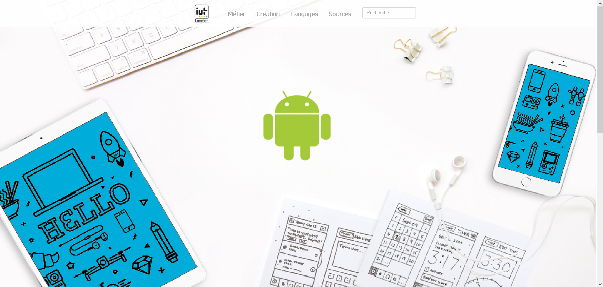
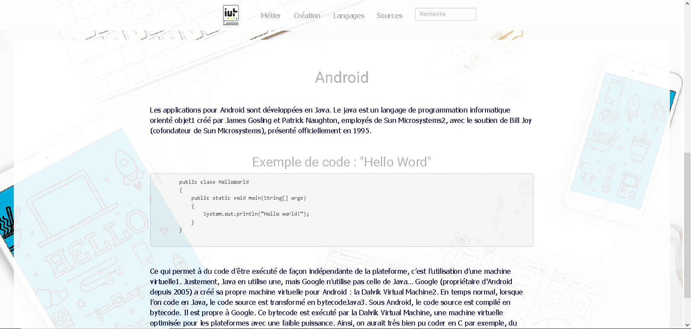
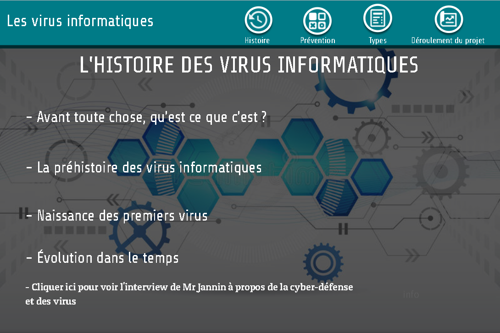
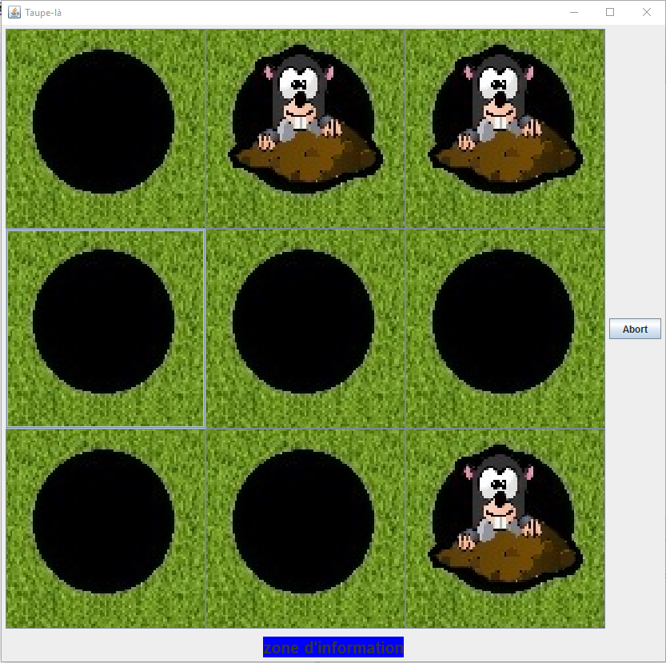
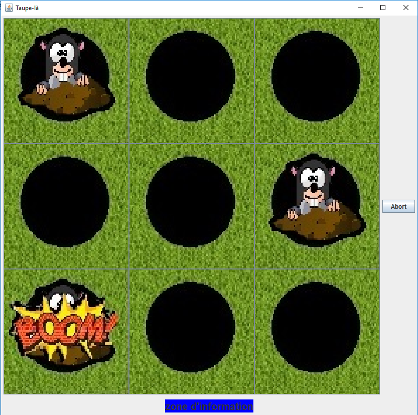

PROJETS
Site Internet | 2018
Création d'un site internet responsive
HTML5, CSS3, Bootstrap


C'est un projet que j'ai mené en groupe et qui m'a permis de mettre à disposition toutes les connaissances que j'avais en web à cette époque. Il m'a en effet poussé à développer mes connaissances en HTML5 et CSS3, mais aussi à commencer à apprendre les bases de jQuery, que j'ai développé par la suite en autodidacte. Il m'a également permis de mieux travailler en groupe et m'a appris l'importance de gérer son temps lors de plus gros projets comme celui-ci.
Web-Documentaire | 2017
Interview d'un ingénieur en cyber-sécurité

Malgré que ce ne soit pas un projet informatique à proprement parlé, ce fût très intéressant. En effet, je connais maintenant les différents types de virus qui existent, et la manière dont ils se propagent. Cela reste de la vulgarisation, mais c'est une première approche que je trouve plûtot utile pour un informaticien. Cela m'a aussi permis de rencontrer un professionnel dans ce domaine, ainsi que de manipuler un nouvel outil, qui est Genially.
Jeu de taupes | 2017
Création d'un jeu de taupes en équipe
Java avec framework JISNtools


Ce projet informatique dans le cadre du Baccalauréat m'a permis de poser les bases de la programmation en JAVA. En effet, j'avais à l'époque peu de connaissances dans ce langage, mais je devais tout de même proposer un logiciel. J'ai donc dû apprendre avec le peu de documentations que j'avais en ma possession à programmer en JAVA un jeu qui fonctionne. Malgré un projet qui n'a pas été totalement abouti, cela m'a permis de créer mon premier "logiciel" et d'avoir à faire à des limites de temps.